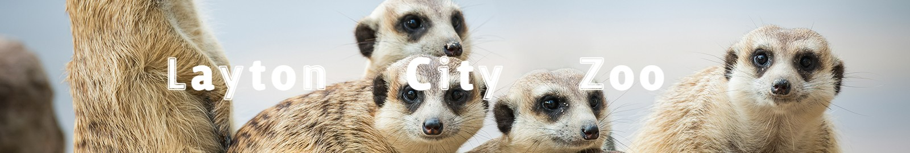

| Description | Black and white stripes make the zebra one of the most recognizable animals in the world. The plains zebra, also known as the common zebra, is the most abundant of three species of zebra, inhabiting the grasslands of eastern and southern Africa. |
|---|---|
| Diet | Plains Zebras eat a wide variety of different grasses, sometimes even eating leaves and young trees. |
| Natural Habitat | They usually live in Southern Africa's treeless grasslands and savanna woodlands |
| Description | Lions have strong, compact bodies and powerful forelegs, teeth and jaws for capturing their prey. Their coats are yellow-gold, and adult males have shaggy manes that range in color from blond to reddish-brown to black |
|---|---|
| Diet | Lions usually hunt and eat medium-sized to large hoofed animals like wildebeests, zebras, and antelopes. |
| Natural Habitat | Lions are most active at night and live in a variety of habitats but prefer grassland, savanna, dense scrub, and open woodland. |
| Description | Dolphins have smooth, rubbery skin and are usually colored in some mixture of black, white, and gray. They have two flippers, or fins, on their sides, as well as a triangular fin on the back |
|---|---|
| Diet | Bottlenose dolphins can thrive in many environments and feed on a variety of prey, such as fish, squid, and crustaceans (e.g., crabs and shrimp). They use different techniques to pursue and capture prey, searching for food individually or cooperatively. |
| Natural Habitat | Bottlenose dolphins are found in temperate and tropical waters around the world. They inhabit a wide variety of habitats, including harbors, bays, gulfs, and estuaries. |
| Description | Black and white stripes make the zebra one of the most recognizable animals in the world. |
|---|---|
| Diet | Plains Zebras eat a wide variety of different vegatation. |
| Natural Habitat | They usually live in Southern Africa's treeless grasslands and savanna woodlands. |
| Description | Lions have strong, compact bodies and powerful forelegs, teeth and jaws for capturing their prey. |
|---|---|
| Diet | Lions usually hunt and eat medium-sized to large hoofed animals. |
| Natural Habitat | Lions are most active at night and live in a variety of habitats but prefer grassland. |
| Description | Dolphins have smooth, rubbery skin and are usually colored in some mixture of black, white, and gray. |
|---|---|
| Diet | Bottlenose dolphins can thrive in many environments and feed on a variety of prey. |
| Natural Habitat | Bottlenose dolphins are found in temperate and tropical waters around the world. |